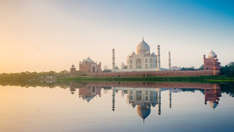
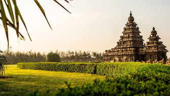
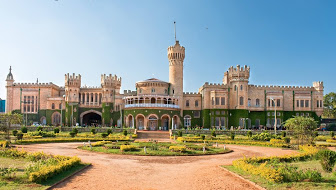
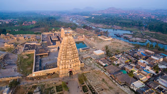
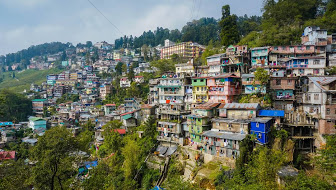

Agra
Chennai
Banglore

Goa

Jaipur

Munnar
Hampi
Dargeeling

Varanasi
|

Agra |

Chennai |

Banglore |
|
Goa |
Jaipur |
Munnar |
|

Hampi |

Dargeeling |
Varanasi |
Agra (/ˈɑːɡrə/ (About this soundlisten)) is a city on the banks of the Yamuna river in the Agra district of the Indian state of Uttar Pradesh.[6] It is 206 kilometres (128 mi) south of the national capital New Delhi. Agra is the fourth-most populous city in Uttar Pradesh and 24th in India. [7] The first documented history of the city begins with a 11th-century Persian poet Mas'ūd Sa'd Salmān writing of an assault on the fortress of Agra, then held by King Jaypal, by Mahmud of Ghazni, which resulted in a sacking despite Jaypal's surrender.[8] Sikandar Lodi was the first ruler of the Delhi Sultanate to move his capital from Delhi to Agra in 1504, and so he is regarded as being the founder of Agra. Sikandar Lodi's son, Ibrahim Lodi, was defeated at the Battle of Panipat in 1526 by Babur, which marked the beginning of Mughal Empire.[9]In a brief interruption in Mughal rule between 1540 and 1556, Sher Shah Suri, established the short lived Sur Empire. Agra was the capital of the Mughal Empire from 1556 to 1648, after which Shah Jahan shifted the capital to Delhi. The Mughal Empire saw the building of many monuments, especially Taj Mahal. The city was later taken by the Marathas and later still fell to the British Raj. Agra is a major tourist destination because of its many Mughal-era buildings, most notably the Taj Mahal, Agra Fort and Fatehpur Sikri, all of which are UNESCO World Heritage Sites.[6] Agra is included on the Golden Triangle tourist circuit, along with Delhi and Jaipur; and the Uttar Pradesh Heritage Arc, a tourist circuit of Uttar Pradesh, along with Lucknow and Varanasi. Agra is in the Braj cultural region.
Chennai (/ˈtʃɛnaɪ/ (About this soundlisten), Tamil: [ˈtɕenːaɪ]), also known as Madras (/məˈdrɑːs/ (About this soundlisten) or /-ˈdræs/,[10] the official name until 1996), is the capital of the Indian state of Tamil Nadu. Located on the Coromandel Coast off the Bay of Bengal, it is one of the largest cultural, economic and educational centres of south India. According to the 2011 Indian census, it is the sixth-most populous city and fourth-most populous urban agglomeration in India. The city together with the adjoining regions constitutes the Chennai Metropolitan Area, which is the 36th-largest urban area by population in the world.[11] The traditional and de facto gateway of South India, Chennai is among the most-visited Indian cities by foreign tourists. It was ranked the 43rd-most visited city in the world for the year 2015.[12] The Quality of Living Survey rated Chennai as the safest city in India.[13] Chennai attracts 45 percent of health tourists visiting India, and 30 to 40 percent of domestic health tourists.[14] As such, it is termed "India's health capital".[15][16] Chennai has the fifth-largest urban economy of India.[9] Chennai had the third-largest expatriate population in India, at 35,000 in 2009, 82,790 in 2011 and estimated at over 100,000 by 2016.[17][18] Tourism-guide publisher Lonely Planet named Chennai as one of the top ten cities in the world to visit in 2015.[19] Chennai is ranked as a beta-level city in the Global Cities Index,[20] and was ranked the best city in India by India Today in the 2014 annual Indian city survey.[21][22] In 2015 Chennai was named the "hottest" city (city worth visiting and worth living in for long term) by the BBC, citing the mixture of both modern and traditional values.[23] National Geographic mentioned Chennai as the only South Asian city to feature in its 2015 "Top 10 food cities" list.[24] Chennai was also named the ninth-best cosmopolitan city in the world by Lonely Planet.[25] In October 2017, Chennai was added to the UNESCO Creative Cities Network (UCCN) list for its rich musical tradition.[26] The Chennai Metropolitan Area is one of the largest municipal economies of India. Chennai is nicknamed "The Detroit of India",[1] with more than one-third of India's automobile industry being based in the city. Home to the Tamil film industry, Chennai is also known as a major film production centre. Chennai is one of the 100 Indian cities to be developed as a smart city under the Smart Cities Mission.[27]
Bangalore /bæŋɡəˈlɔːr/, officially known as Bengaluru[12] ([ˈbeŋɡəɭuːɾu] (About this soundlisten)), is the capital of the Indian state of Karnataka. It has a population of more than 8 million and a metropolitan population of around 11 million, making it the third most populous city and fifth most populous urban agglomeration in India.[13] Located in southern India on the Deccan Plateau, at a height of over 900 m (3,000 ft) above sea level, Bangalore is known for its pleasant climate throughout the year. Its elevation is the highest among the major cities of India.[14] The city's history dates back to around 890 AD, in a stone inscription found at the Nageshwara Temple in Begur, Bangalore. The Begur inscription is written in Halegannada (ancient Kannada), mentions 'Bengaluru Kalaga' (battle of Bengaluru). It was a significant turning point in the history of Bangalore as it bears the earliest reference to the name 'Bengaluru'.[15] In 1537 CE, Kempé Gowdā – a feudal ruler under the Vijayanagara Empire – established a mud fort considered to be the foundation of modern Bengaluru and its oldest areas, or petes, which exist to the present day. After the fall of Vijayanagar empire in 16th century, the Mughals sold Bangalore to Chikkadevaraja Wodeyar (1673–1704), the then ruler of the Kingdom of Mysore for three lakh rupees.[16] When Haider Ali seized control of the Kingdom of Mysore, the administration of Bangalore passed into his hands. It was captured by the British East India Company after victory in the Fourth Anglo-Mysore War (1799), who returned administrative control of the city to the Maharaja of Mysore. The old city developed in the dominions of the Maharaja of Mysore and was made capital of the Princely State of Mysore, which existed as a nominally sovereign entity of the British Raj. In 1809, the British shifted their cantonment to Bangalore, outside the old city, and a town grew up around it, which was governed as part of British India. Following India's independence in 1947, Bangalore became the capital of Mysore State, and remained capital when the new Indian state of Karnataka was formed in 1956. The two urban settlements of Bangalore – city and cantonment – which had developed as independent entities merged into a single urban centre in 1949. The existing Kannada name, Bengalūru, was declared the official name of the city in 2006. Bangalore is widely regarded as the "Silicon Valley of India" (or "IT capital of India") because of its role as the nation's leading information technology (IT) exporter.[1] Indian technological organisations such as ISRO, Infosys, Wipro and HAL are headquartered in the city. A demographically diverse city, Bangalore is the second fastest-growing major metropolis in India.[17] Recent estimates of the metro economy of its urban area have ranked Bangalore either the fourth or fifth-most productive metro area of India.[10][18] It is home to many educational and research institutions in India, such as Indian Institute of Science (IISc), Indian Institute of Management (Bangalore) (IIMB), International Institute of Information Technology, Bangalore (IIITB), National Institute of Fashion Technology, Bangalore, National Institute of Design, Bangalore (NID R&D Campus), National Law School of India University (NLSIU) and National Institute of Mental Health and Neurosciences (NIMHANS). Numerous state-owned aerospace and defence organisations, such as Bharat Electronics, Hindustan Aeronautics and National Aerospace Laboratories are located in the city. The city also houses the Kannada film industry.
Goa (/ˈɡoʊə/ (About this soundlisten)) is a state on the southwestern coast of India within the region known as the Konkan, and geographically separated from the Deccan highlands by the Western Ghats.[6] It is surrounded by the Indian states of Maharashtra to the north and Karnataka to the east and south, with the Arabian Sea forming its western coast. It is India's smallest state by area and the fourth-smallest by population. Goa has the highest GDP per capita among all Indian states,[7] two and a half times that of the country.[8] It was ranked the best-placed state by the Eleventh Finance Commission for its infrastructure and ranked on top for the best quality of life in India by the National Commission on Population based on the 12 Indicators.[8] Panaji is the state's capital, while Vasco da Gama is its largest city. The historic city of Margao still exhibits the cultural influence of the Portuguese, who first landed in the early 16th century as merchants and conquered it soon thereafter. Goa was a former state of the Portuguese Empire. The Portuguese overseas territory of Portuguese India existed for about 450 years until it was annexed by India in 1961.[9][10] Its majority and official language is Konkani. Goa is visited by large numbers of international and domestic tourists each year for its white sand beaches, nightlife, places of worship and World Heritage-listed architecture. It has rich flora and fauna, owing to its location on the Western Ghats range, a biodiversity hotspot.
Jaipur (/ˈdʒaɪpʊər/ (About this soundlisten)[6][7][8] is the capital and the largest city of the Indian state of Rajasthan. As of 2011, the city had a population of 3.1 million, making it the tenth most populous city in the country. Jaipur is also known as the Pink City, due to the dominant color scheme of its buildings. It is located 268 km (167 miles) from the national capital New Delhi. Jaipur was founded in 1727 by the Rajput ruler Jai Singh II,[9] the ruler of Amer, after whom the city is named. It was one of the earliest planned cities of modern India, designed by Vidyadhar Bhattacharya.[10] During the British Colonial period, the city served as the capital of Jaipur State. After independence in 1947, Jaipur was made capital of the newly-formed state of Rajasthan. Jaipur is a popular tourist destination in India and forms a part of the west Golden Triangle tourist circuit along with Delhi and Agra (240 km, 149 mi).[11] It also serves as a gateway to other tourist destinations in Rajasthan such as Jodhpur (348 km, 216 mi), Jaisalmer (571 km, 355 mi), Udaipur (421 km, 262 mi), Kota (252 km, 156 mi) and Mount Abu (520 km, 323 mi). Jaipur is located 616 km from Shimla. On 6 July 2019, UNESCO World Heritage Committee inscribed Jaipur the ‘Pink City of India’ among its World Heritage Sites.[12] The city is also home to the UNESCO World Heritage Sites Amber Fort and Jantar Mantar.
Munnar is a town and hill station located in the Idukki district of the southwestern Indian state of Kerala. Munnar is situated at around 1,600 metres (5,200 ft) above mean sea level,[2] in the Western Ghats mountain range. Munnar is also called the "Kashmir of South India" and is a popular honeymoon destination.Most of the native flora and fauna of Munnar have disappeared due to severe habitat fragmentation resultant from the creation of the plantations. However, some species continue to survive and thrive in several protected areas nearby, including the new Kurinjimala Sanctuary to the east, the Chinnar Wildlife Sanctuary, Manjampatti Valley and the Amaravati reserve forest of Indira Gandhi Wildlife Sanctuary to the north east, the Eravikulam National Park and Anamudi Shola National Park to the north, the Pampadum Shola National Park to the south and the proposed Palani Hills National Park to the east. There are four major directions in Munnar; Mattupatty Direction, Thekkedy Direction, Adimaly Direction and Coimbatore Direction. The climate and tea plantations are the main reason for tourism in Munnar. Tourists come here to see the plush green carpet that is strewn all around. The tourist count increases every year with a major number during the months of April–May when summer vacations begin across the country. In 2018, a huge number of tourists is expected during the months of August–September when the kurinji blooms once in 12 years
Hampi or Hampe, also referred to as the Group of Monuments at Hampi, is a UNESCO World Heritage Site located in east-central Karnataka, India.[1] It became the pilgrimage centre of the Hindu religion. It was the capital of the Vijayanagara Empire in the 14th century.[2] Chronicles left by Persian and European travellers, particularly the Portuguese, say that the Hampi state was a prosperous, wealthy and grand city near the Tungabhadra River, with numerous temples, farms and trading markets. By 1500 CE, Hampi-Vijayanagara was the world's second-largest medieval-era city after Beijing, and probably India's richest at that time, attracting traders from Persia and Portugal.[3][4] The Vijayanagara Empire was defeated by a coalition of Muslim sultanates; its capital was conquered, pillaged and destroyed by sultanate armies in 1565, after which Hampi remained in ruins.[2][5][6] Located in Karnataka near the modern-era city of Hosapete, Hampi's ruins are spread over 4,100 hectares (16 sq mi) and it has been described by UNESCO as an "austere, grandiose site" of more than 1,600 surviving remains of the last great Hindu kingdom in South India that includes "forts, riverside features, royal and sacred complexes, temples, shrines, pillared halls, mandapas, memorial structures, water structures and others".[7] Hampi predates the Vijayanagara Empire; there is evidence of Ashokan epigraphy, and it is mentioned in the Ramayana and the Puranas of Hinduism as Pampaa Devi Tirtha Kshetra.[2][8] Hampi continues to be an important religious centre, housing the Virupaksha Temple, an active Adi Shankara-linked monastery and various monuments belonging to the old city.[5][9]
Darjeeling (Bengali: [ˈdarˌdʒiliŋ], Nepali: [darˈdziliŋ]) is a city and a municipality in the Indian state of West Bengal. It is located in the Lesser Himalayas at an elevation of 2,000 metres (6,700 ft). It is noted for its tea industry, its views of Kangchenjunga, the world's third-highest mountain, and the Darjeeling Himalayan Railway, a UNESCO World Heritage Site. Darjeeling is the headquarters of the Darjeeling district which has a partially autonomous status called Gorkhaland Territorial Administration within the state of West Bengal. It is also a popular tourist destination in India. The recorded history of the town starts from the early 19th century when the colonial administration under the British Raj set up a sanatorium and a military depot in the region. Subsequently, extensive tea plantations were established in the region and tea growers developed hybrids of black tea and created new fermentation techniques. The resultant distinctive Darjeeling tea is internationally recognised and ranks among the most popular black teas in the world.[4] The Darjeeling Himalayan Railway connects the town with the plains and has some of the few steam locomotives still in service in India. Darjeeling has several British-style private schools, which attract pupils from all over India and a few neighbouring countries. The varied culture of the town reflects its diverse demographic milieu comprising Lepcha, Khampa, Gorkha, Newar, Sherpa, Bhutia, Bengali[5] and other mainland Indian ethno-linguistic groups. Darjeeling, alongside its neighbouring town of Kalimpong, was the centre of the Gorkhaland social movement in the 1980s and summer 2017.
Varanasi (Hindustani pronunciation: [ʋaːˈraːɳəsi] (About this soundlisten)), also known as Benares,[9] Banaras (Banāras [bəˈnaːrəs] (About this soundlisten)), or Kashi (Kāśī [ˈkaːʃi] (About this soundlisten)), is a city on the banks of the river Ganges in Uttar Pradesh, India, 320 kilometres (200 mi) south-east of the state capital, Lucknow, and 121 kilometres (75 mi) east of Allahabad. A major religious hub in India, it is the holiest of the seven sacred cities (Sapta Puri) in Hinduism and Jainism, and played an important role in the development of Buddhism and Ravidassia. Varanasi lies along National Highway 2, and is served by Varanasi Junction railway station and Lal Bahadur Shastri International Airport. Varanasi grew as an important industrial centre famous for its muslin and silk fabrics, perfumes, ivory works, and sculpture. Buddha is believed to have founded Buddhism here around 528 BCE when he gave his first sermon, "The Setting in Motion of the Wheel of Dharma", at nearby Sarnath. The city's religious importance continued to grow in the 8th century, when Adi Shankara established the worship of Shiva as an official sect of Varanasi. During the Muslim rule through the Middle Ages, the city continued as an important centre of Hindu devotion, pilgrimage, mysticism and poetry which further contributed to its reputation as a centre of cultural importance and religious education. Tulsidas wrote his epic poem on Rama's life called Ram Charit Manas in Varanasi. Several other major figures of the Bhakti movement were born in Varanasi, including Kabir and Ravidas.[10] Guru Nanak visited Varanasi for Maha Shivaratri in 1507, a trip that played a large role in the founding of Sikhism. In the 16th century, Varanasi had a cultural revival under the Mughal emperor Akbar who patronised the city, and built two large temples dedicated to Shiva and Vishnu. Much of what is considered modern Varanasi was built during the 18th century, by the Maratha and Bhumihar Brahmin kings. The Kingdom of Benares was given official status by the Mughals in 1737, and continued as a dynasty-governed area until Indian independence in 1947. The city is governed by the Varanasi Nagar Nigam (Municipal Corporation) and is represented in the Parliament of India by the current Prime Minister of India Narendra Modi, who won the Lok Sabha elections in 2014 by a huge margin. Silk weaving, carpets and crafts and tourism employ a significant number of the local population, as do the Diesel Locomotive Works and Bharat Heavy Electricals. Varanasi Hospital's foundation stone was laid by governor Kanaiyalal Maneklal Munshi in 1954 and it was inaugurated by president S. Radhakrishnan in 1964.[11] Varanasi has been a cultural centre of northern India for several thousand years, and is closely associated with the Ganges. Hindus believe that dying here and getting cremated along the banks of the "holy" Ganges river allows one to break the cycle of rebirth and attain salvation,[12] making it a major center for pilgrimage. The city is known worldwide for its many ghats, embankments made in steps of stone slabs along the river bank where pilgrims perform ritual ablutions. Of particular note are the Dashashwamedh Ghat, the Panchganga Ghat, the Manikarnika Ghat, and the Harishchandra Ghat, the last two being where Hindus cremate their dead. The Hindu genealogy registers at Varanasi are kept here. The Ramnagar Fort, near the eastern bank of the Ganges, was built in the 18th century in the Mughal style of architecture, featuring carved balconies, open courtyards, and scenic pavilions. Among the estimated 23,000 temples in Varanasi are Kashi Vishwanath Temple of Shiva, the Sankat Mochan Hanuman Temple, and the Durga Temple. The Kashi Naresh (Maharaja of Kashi) is the chief cultural patron of Varanasi, and an essential part of all religious celebrations. The city has long been an educational and musical centre: many prominent Indian philosophers, poets, writers, and musicians live or have lived in the city, and it was the place where the Benares gharana form of Hindustani classical music was developed. One of Asia's largest residential universities is Banaras Hindu University (BHU).